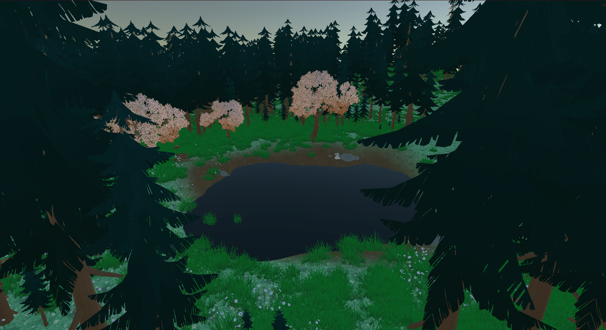

Water Shader
- Developed a Skill class to store data for each ability
- Programmed system to unlock, socket, and display information for skills
- Created an Array for assigned skills that is implemented into the combat system
Skill Tree
- Developed water shaders, implementing vertex displacement in a wave pattern
- Created two distinct shaders: one for rough ocean water, one for a calm lake
- In progress work on textures and foam layer
